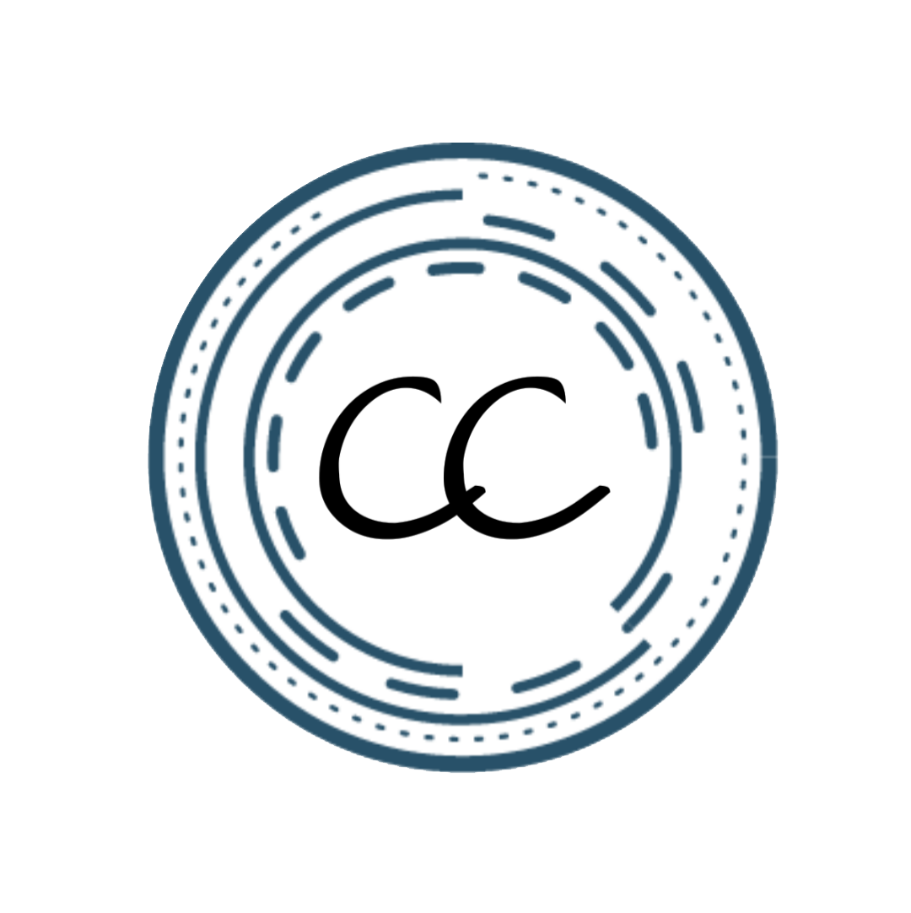
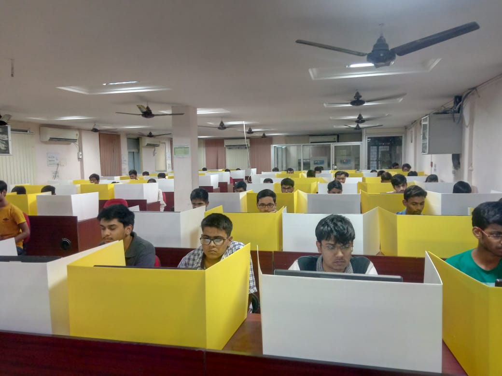
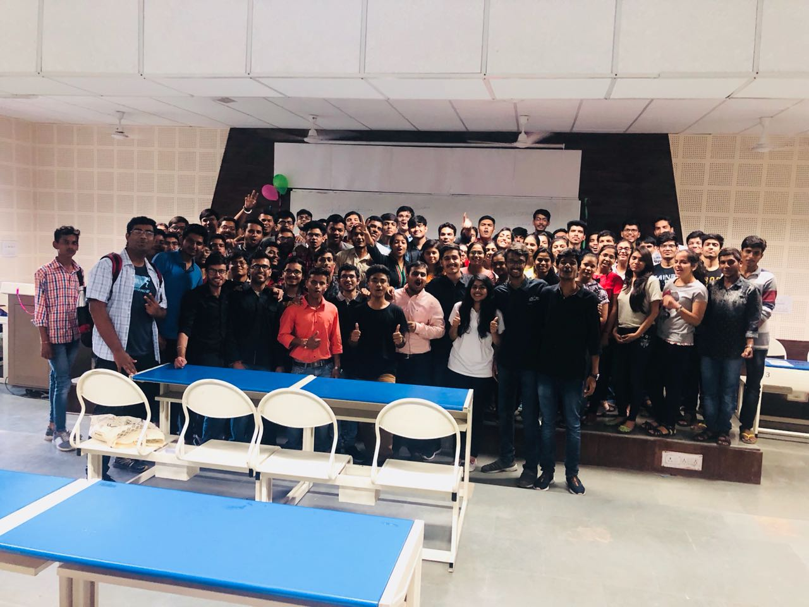
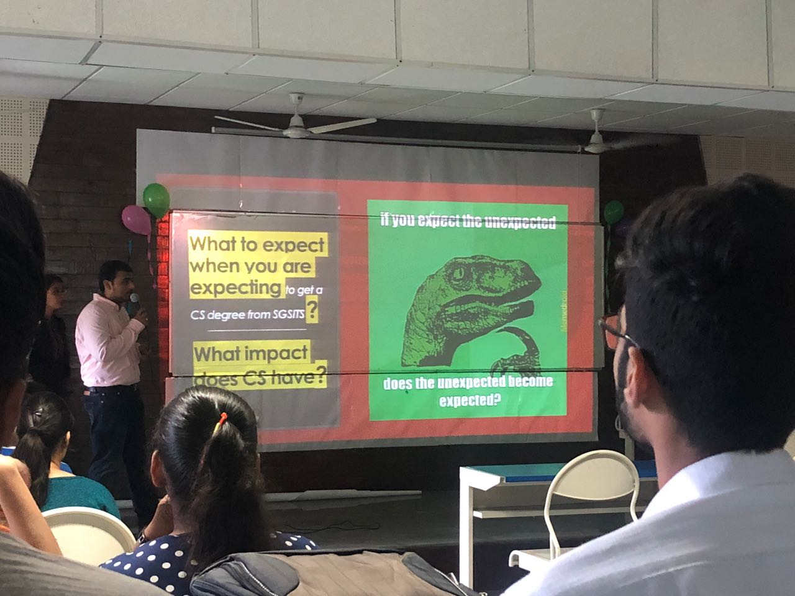
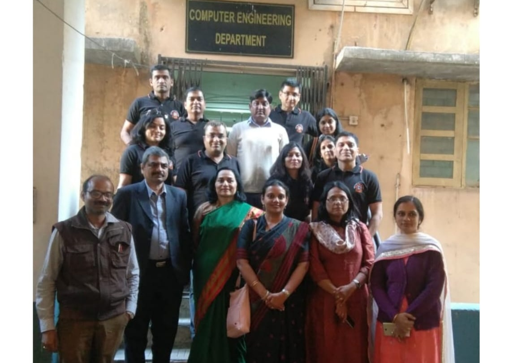
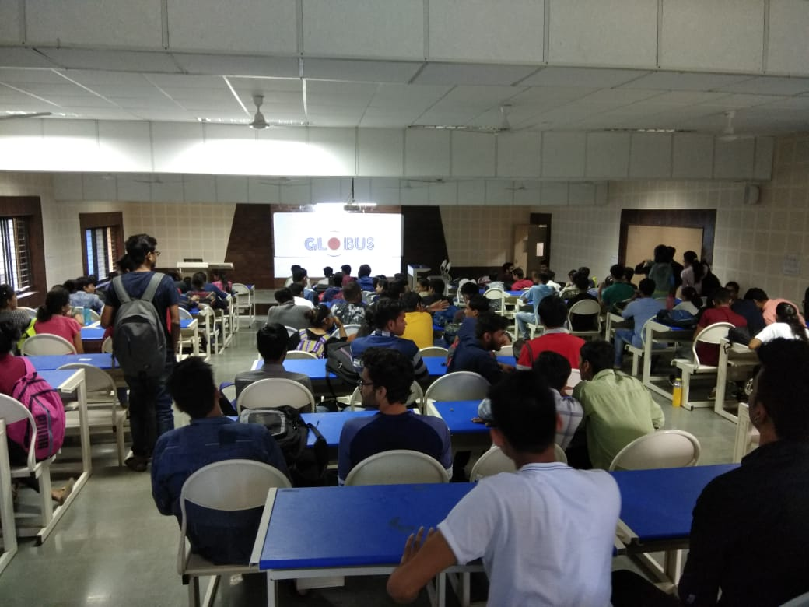
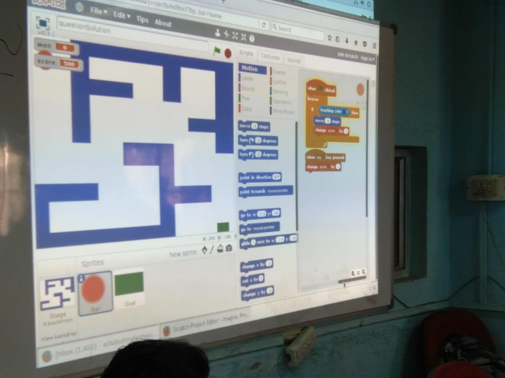

Technical club of computer engineering department of SGSITS

About Computer Club
We at Computer Club are a union of people who are Technology and Coding fanatics. Not just limited to programming, we also facilitate an overall development as an engineer through nurturing tool like internships , Workshops, demos and oodles of related activities. Faculty and students here are all devout to betterment of logic building and situation handling aspects of an engineer's personality.
The club acts as a support system for the students to get work experience through practical projects and complete their technical part of personality. It aims at providing work experience starting right from the 1st year, uplifting the technological standards of students , and bringing in the culture of work while you play for their betterment . Overall it is a great work space for students to learn and implement.
Our Values
MOTIVE:
"There are no secrets to success, it the result of perseverance, hard work and learning from failure"
The motives of this club in a larger sense is comprehensive development of students in aspects of computer science engineering, which constitutes programming, logic building, problem solving, rational approach, and teamwork. And these motives are served best in the platter of efficiency and finesse.
Not only do we strategically foster engineering skills, we also strive to cultivate soft skills that makes one not only an excellent engineer but also a reverent human being.
It is our steadfast belief that it's more than necessary that the young and spirited students we cater, hold robust personalities and skill sets that incorporate eloquence, confidence, healthy communication, and above all, never ending love for learning, growing, making mistakes and getting back up.
VISION:
Our vision is to create a mileu of people who will become eminent in all domains and to cater to everyone who aspires to delve into the world of computers, languages, networks and what not.
We value constant hustle to serve our best every time and to serve new admittedly
OUTCOMES
What we work for !
INTERNSHIPS
Work to get deserving internships.
PERSONAL GROWTH
Personality development and practical skills
NEW IDEAS
Explore new things apart from acdemics under the Supervision and guidance of mentors.
Portfolio
We organize activities in programming, competitive coding, hackathons etc. We also indulge in internships, expert lectures, workshops, prep talks, interaction sessions and piles more of activities. We believe that each of these holds its own significance and service.
Our activities are the heart of this learning journey and we ensure that everything we do reaps welfare.

Heuristic
Coding competition.

Orientation Programme
Interaction with nurtures(CSE 1 year).

Presentations
Introduction to CSE.GSITS community.

Alumini Meet
Allumini meet of department held and managed by computer club.

AWS
An allumini week session for students to grab information about internships and it's importance

Code with Flow
A coding game held in technical and culural fest AAYAM 2k18
OUR BELIEVES
"A person who never made a mistake, never tried anything new !" Albert Eienstien
"The strength of the team is each individual member. The strength of each member is the team." Phil Jackson
"It takes a great deal of bravery to stand up to our enemies, but just as much to stand up to our friends" Albus Dumbledore (Harry Potter and the sorcerer's stone)
The Student-companion program is an initiative of the Computer Science fraternity to extend guided assistance to the CS freshmen by their seniors from the department. The program was upheld under the leadership of Ms. Priyanka Bammne, who is also the Mentor of the Club.
The members of the Computer Club were the student-companions for the program. Each member was appointed 6 juniors who became his/her Buddies. The student-companions then interacted with their buddies via various media.
Continue reading....
The key reason for the adaptation of this program was the mere fellow feeling that when students begin on their journey into a college, they face a myriad of problems, from being unable to find the labs to being indecisive and have equivocal ideas about their career, stream, department future prospects and in the worst case, bullying. This ambiguity or vulnerability can sometimes lead to frustration among students and may result in irksome consequences. And then there are times that students may feel disoriented and unsupported. So, to relieve the forthcoming freshmen from these distresses the Department undertook the responsibility to aid the juniors and lend them a clearer perspective on what's what, and a firmer knowledge of why they are here and what's the right way to be. The student-companions were available for their juniors as much as they could be, and helped clarify their queries, doubts etc to the best of their knowledge.
Since the program has started, the juniors feel much more confident and encouraged. They found on introspection that a lot of their inhibitions and irrational ideas were shooed away. A lot of them also developed a sense of belonging which is hard to attain in freshmen year with the virtue of this program. And it is through this program the senior-junior gaps have narrowed, and camaraderie has risen, which is way more than we had expected and are wholeheartedly proud of.
The overall feedback of the program has been overwhelming, the students and the senior were more comfortable now than they would have been otherwise.
Each of us involved in this program will continue to undertake the responsibilities that entail, to continue to help, assist, guide and support our juniors in every way possible.